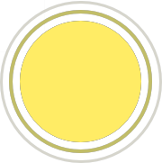
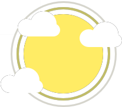
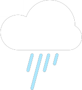
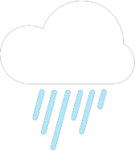
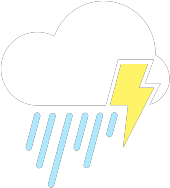

<ion-header no-border [translucent]="false">
    <app-header></app-header>
</ion-header>
<ion-content [fullscreen]="true" color="primary">
    <div style="height: 100%;">
        <div *ngIf="dataSource" class="first">
            <ion-img *ngIf="this.icon === '01d' || this.icon === '01n'" src="../../../assets/weather/Clear.png"
                class="w-img"></ion-img>
            <ion-img *ngIf="this.icon === '02d' || this.icon === '02n'" src="../../../assets/weather/LightCloud.png"
                class="w-img"></ion-img>
            <ion-img *ngIf="this.icon === '03d' || this.icon === '03n'" src="../../../assets/weather/HeavyCloud.png"
                class="w-img"></ion-img>
            <ion-img *ngIf="this.icon === '04d' || this.icon === '04n'" src="../../../assets/weather/LightCloud.png"
                class="w-img"></ion-img>
            <ion-img *ngIf="this.icon === '09d' || this.icon === '09n'" src="../../../assets/weather/LightRain.png"
                class="w-img"></ion-img>
            <ion-img *ngIf="this.icon === '10d' || this.icon === '10n'" src="../../../assets/weather/HeavyRain.png"
                class="w-img"></ion-img>
            <ion-img *ngIf="this.icon === '11d' || this.icon === '11n'" src="../../../assets/weather/Thunderstorm.png"
                class="w-img"></ion-img>
            <ion-img *ngIf="this.icon === '13d' || this.icon === '13n'" src="../../../assets/weather/Snow.png"
                class="w-img"></ion-img>
            <ion-img *ngIf="this.icon === '50d' || this.icon === '50n'" src="../../../assets/weather/HeavyCloud.png"
                class="w-img"></ion-img>
            <ion-label class="lbl-degrees">{{degrees | degrees}}</ion-label>
            <ion-label class="lbl-status">{{status}}</ion-label>
            <ion-label class="lbl-date">{{date | date}}</ion-label>
        </div>
        <div class="second-main">
            <div class="ion-padding second">
                <ion-label>
                    Next days forecast
                </ion-label>
                <ion-list [inset]="true" mode="ios">
                    <ion-item button *ngFor="let day of nextDays" color="primary" (click)="open(day.dt_txt)">
                        <ion-avatar *ngIf="day.weather[0].icon === '01d' || day.weather[0].icon === '01n'">
                            
                        </ion-avatar>
                        <ion-avatar *ngIf="day.weather[0].icon === '02d' || day.weather[0].icon === '02n'">
                            
                        </ion-avatar>
                        <ion-avatar *ngIf="day.weather[0].icon === '03d' || day.weather[0].icon === '03n'">
                            
                        </ion-avatar>
                        <ion-avatar *ngIf="day.weather[0].icon === '04d' || day.weather[0].icon === '04n'">
                            
                        </ion-avatar>
                        <ion-avatar *ngIf="day.weather[0].icon === '09d' || day.weather[0].icon === '09n'">
                            
                        </ion-avatar>
                        <ion-avatar *ngIf="day.weather[0].icon === '10d' || day.weather[0].icon === '10n'">
                            
                        </ion-avatar>
                        <ion-avatar *ngIf="day.weather[0].icon === '11d' || day.weather[0].icon === '11n'">
                            
                        </ion-avatar>
                        <ion-avatar *ngIf="day.weather[0].icon === '13d' || day.weather[0].icon === '13n'">
                            
                        </ion-avatar>
                        <ion-avatar *ngIf="day.weather[0].icon === '50d' || day.weather[0].icon === '50n'">
                            
                        </ion-avatar>
                        <ion-label class="txt-days">{{day.dt_txt | date}}</ion-label>
                        <ion-label slot="end">{{day.main.temp | degrees}}</ion-label>
                    </ion-item>
                </ion-list>
            </div>
        </div>
        <ion-button fill="clear" color="tertiary" class="button-d" expand="block" (click)="scrollToBottom()" mode="md">
            <ion-icon name="chevron-down-outline"></ion-icon>
        </ion-button>
    </div>
    <div class="second-content">
        <h1 class="title-second">
            Today's highlights
        </h1>
        <ion-card color="secondary" class="second-card">
            <ion-card-header>
              <ion-card-title class="title-card-sec">Wind Status</ion-card-title>
            </ion-card-header>
          
            <ion-card-content class="second-card-content">
              {{speed + " mph"}}
            </ion-card-content>
            <ion-icon size="large" name="navigate-circle-outline"></ion-icon>
          </ion-card>
        <ion-card color="secondary" class="second-card">
            <ion-card-header>
              <ion-card-title class="title-card-sec">Humidity</ion-card-title>
            </ion-card-header>
          
            <ion-card-content class="second-card-content">
              {{humidity + "%"}}
            </ion-card-content>
            <ion-icon size="large" name="water-outline"></ion-icon>
          </ion-card>
        <ion-card color="secondary" class="second-card">
            <ion-card-header>
              <ion-card-title class="title-card-sec">Visibility</ion-card-title>
            </ion-card-header>
          
            <ion-card-content class="second-card-content">
              {{visibility | miles}}
            </ion-card-content>
            <ion-icon size="large" name="eye-outline"></ion-icon>
          </ion-card>
        <ion-card color="secondary" class="second-card">
            <ion-card-header>
              <ion-card-title class="title-card-sec">Air Preassure</ion-card-title>
            </ion-card-header>
          
            <ion-card-content class="second-card-content">
              {{pressure + " mb"}}
            </ion-card-content>
            <ion-icon size="large" name="speedometer-outline"></ion-icon>
          </ion-card>
          <ion-button fill="clear" color="tertiary" expand="block"  class="button-d" (click)="scrollToTop()" mode="md">
              <ion-icon name="chevron-up-outline"></ion-icon>
          </ion-button>
    </div>
    <ion-modal>
        <ng-template>
            <ion-header [translucent]="false" no-border mode="ios">
                <ion-toolbar color="primary">
                    <ion-title>{{dataSelectedDay[0].dt_txt | date}}</ion-title>
                    <ion-button slot="end" (click)="close()" color="tertiary" [strong]="true"
                        fill="clear">Close</ion-button>
                </ion-toolbar>
            </ion-header>
            <ion-content class="ion-padding" color="primary">
                <div class="cards-container content-bg">
                    <ion-card *ngFor="let dayCard of dataSelectedDay" style="width: 45%; margin: 10px 7px 20px 7px;" color="secondary">
                        <ion-card-header>
                            <ion-card-title style="text-align: center;">{{dayCard.dt_txt.split("
                                ")[1] | hours}}</ion-card-title>
                        </ion-card-header>

                        <ion-card-content class="card-content">
                            <ion-img class="img-card"
                                *ngIf="dayCard.weather[0].icon === '01d' || dayCard.weather[0].icon === '01n'"
                                src="../../../assets/weather/Clear.png">
                            </ion-img>
                            <ion-img class="img-card"
                                *ngIf="dayCard.weather[0].icon === '02d' || dayCard.weather[0].icon === '02n'"
                                src="../../../assets/weather/LightCloud.png">
                            </ion-img>
                            <ion-img class="img-card"
                                *ngIf="dayCard.weather[0].icon === '03d' || dayCard.weather[0].icon === '03n'"
                                src="../../../assets/weather/HeavyCloud.png">
                            </ion-img>
                            <ion-img class="img-card"
                                *ngIf="dayCard.weather[0].icon === '04d' || dayCard.weather[0].icon === '04n'"
                                src="../../../assets/weather/LightCloud.png">
                            </ion-img>
                            <ion-img class="img-card"
                                *ngIf="dayCard.weather[0].icon === '09d' || dayCard.weather[0].icon === '09n'"
                                src="../../../assets/weather/LightRain.png">
                            </ion-img>
                            <ion-img class="img-card"
                                *ngIf="dayCard.weather[0].icon === '10d' || dayCard.weather[0].icon === '10n'"
                                src="../../../assets/weather/HeavyRain.png">
                            </ion-img>
                            <ion-img class="img-card"
                                *ngIf="dayCard.weather[0].icon === '11d' || dayCard.weather[0].icon === '11n'"
                                src="../../../assets/weather/Thunderstorm.png">
                            </ion-img>
                            <ion-img class="img-card"
                                *ngIf="dayCard.weather[0].icon === '13d' || dayCard.weather[0].icon === '13n'"
                                src="../../../assets/weather/Snow.png">
                            </ion-img>
                            <ion-img class="img-card"
                                *ngIf="dayCard.weather[0].icon === '50d' || dayCard.weather[0].icon === '50n'"
                                src="../../../assets/weather/HeavyCloud.png">
                            </ion-img>
                            <ion-label>{{ dayCard.weather[0].description[0].toUpperCase() +
                                dayCard.weather[0].description.slice(1).toLowerCase()}}</ion-label>

                            <div>
                                <ion-label style="margin-right: 15px; font-size: 13px;">Max: {{dayCard.main.temp_max |
                                    degrees}}</ion-label>
                                <ion-label style="font-size: 13px;">Min: {{dayCard.main.temp_min | degrees}}</ion-label>
                            </div>
                        </ion-card-content>
                    </ion-card>
                </div>

            </ion-content>
        </ng-template>
    </ion-modal>
</ion-content>